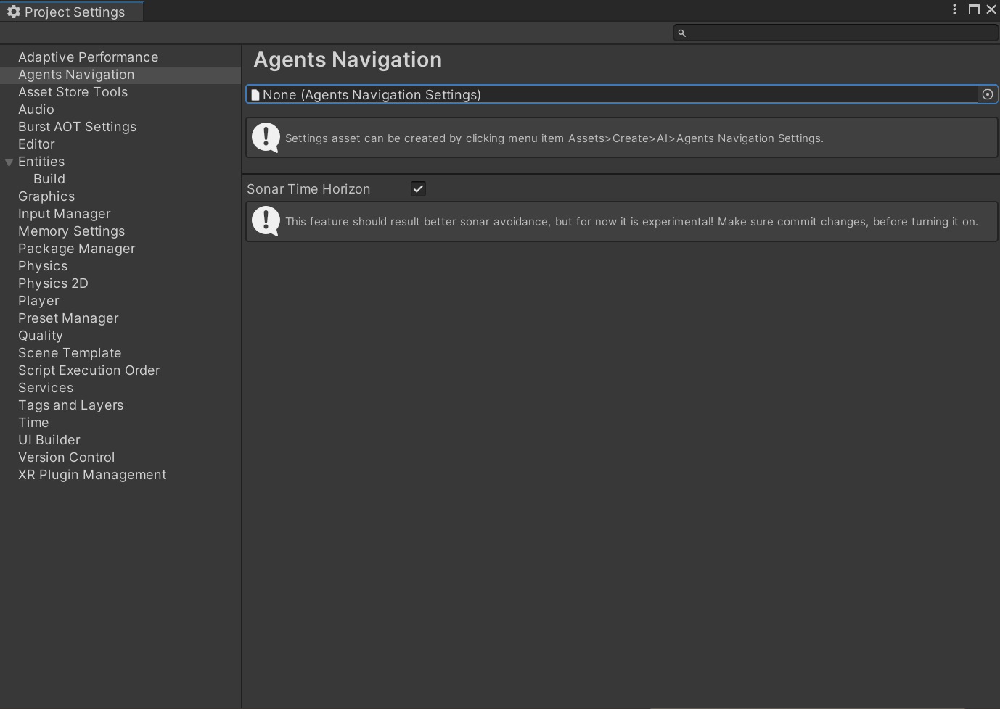

Settings
Settings in this package can be found in Project Settings window tab called Agents Navigation. The first field references project wide settings asset that stores serialized fields of the settings.
To change settings you will need to create scriptable object Agents Navigation Settings. It can be done using menu item Assets>Create>AI>Agents Navigation Settings and then referenced to the field.

Note
Then setting asset is referenced it will be automatically stored in player settings preloaded assets. In case no asset is referenced the default settings will be used.
Regular Update
By default, all navigation systems run in FixedStepSimulationSystemGroup. This makes all systems update in fixed steps. It works very similarly to MonoBehaviour.FixedUpdate, and most of the same principles apply. The time step for fixed updates can be changed in Project Settings -> Time -> Fixed Timestep.
By enabling the Regular Update option in the settings, all systems will instead run in the regular StepSimulationSystemGroup, similar to MonoBehaviour.Update.
Fixed Update essentially works like this: on each frame, Unity checks how much time has accumulated since the last fixed update. If the accumulated time is greater than the fixed timestep, a fixed update is run. Unity may run multiple fixed updates within a single frame.
When should you use fixed versus regular updates? It really depends on your game. Fixed Update is typically used when you want more determinism and more stable navigation. Since each step is fixed, it is less likely to produce unpredictable errors caused by varying delta time. However, it is very important to ensure that your game does not fall below the target fixed timestep. Otherwise, it can lead to what is called the “spiral of death,” where each frame accumulates more and more fixed updates, eventually degrading performance drastically.
Fixed Update can also sometimes cause jagged agent movement. For example, if your game runs faster than the fixed timestep, agents may only move every other frame, creating the illusion of lag.